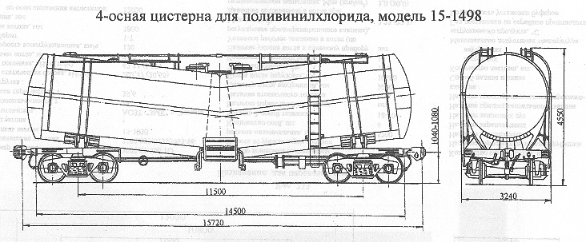

Назначение: для бестарной перевозки поливинилхлорида
Параметры
| Номер проекта | 1498.00.000 |
| Технические условия | ТУ 24.00.262-82 |
| Модель вагона | 15-1498 |
| Тип вагона | |
| Изготовитель | ПО "Ждановтяжмаш" |
| Грузоподъемность, т | 55,5 |
| Масса тары вагона, т | 30,35 |
| Нагрузка: статическая осевая, кН(тс) |
210,45(21,46) |
| погонная, кН/м(тс/м) | 53,54(5,46) |
| Объем котла, м3: полный |
99,2 |
| полезный | 92,2 |
| Скорость конструкционная, км/ч | 120 |
| Габарит | 1-ВМ(0-Т) |
| База вагона, мм | 11500 |
| Длина, мм: по осям сцепления автосцепок |
15720 |
| по концевым балкам рамы | 14500 |
| Высота от уровня верха головок рельсов максимальная, мм | 4550 |
| Количество осей, шт. | 4 |
| Модель 2-осной тележки | 18-100 |
| Наличие переходной площадки | нет |
| Наличие стояночного тормоза | есть |
| Диаметр котла внутренний,мм | 3000 |
| Наличие смотрового люка,мм | нет |
| Длина котла наружная,мм | 14488 |
| Условное рабочее давление в котле (по регулировке предохранительного клапана), МПа(кгс/см2) | 0,22(2,2) |
| Удельный объем, м3/т | 1,66 |
| Давление в котле, МПа(кгс/см2): при разгрузке |
0,2(2,0) |
| при загрузке | нет |
| Производительность выгрузки, т/ч | 61,7 |
| Количество люков, шт.: загрузочных |
4 |
| лазовых | 2 |
| Количество аэролотков, шт. | 4 |
| Количество аэроплиток, шт. | |
| Диаметр люка, мм: лазового |
575 |
| загрузочного | 400 |
| Диаметр разгрузочного патрубка, мм | 100 |
| Давление создаваемое в котле при гидровлическом испытании, МПа(кгс/см2) | 0,3(3,0) |
| Максимально допустимая температура загружаемого продукта, ºС | +80 |
| Количество секций котла, шт. | 2 |
| Угол наклона секций к горизонту, град | 6 |
| Год постановки на серийное производство | 1971 |
| Возможность установки буфера | нет |
Примечание: 1. По данным ПО "Ждановтяжмаш" планируется следующая модернизация: количество секций котла
изменилось с 2 на 1; количество загрузочных люков изменилось с 4 на 5, а лазовых люков - с 2 на 1
2. Загрузка - гидравлическая или пневмотранспортом, выгрузка пневмотранспортом.